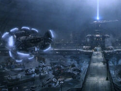

After neo took the red pill, he woke up in morpheus's ship with ports on his body and then soon he sat on a chair and then the ports were connected to a computer program to allow him to join the contruct,the loading program then morpheus brings neo to the real world or the desert and explains how the humans are just batteries for A.I
In the middle of the story As Neo recuperates from a lifetime of physical inactivity in the pod, Morpheus explains the situation: In the early 21st century, a war broke out between humanity and intelligent machines. After humans blocked the machines' access to solar energy. the machines responded by capturing humans and harvesting their bioelectric power while keeping their minds pacified in the Matrix.
a shared simulated reumans took refuge in the underground city of Zion. Mos the rest of Morpheus's crew straps him into a chair, Neo is told that pill he took is part of a trace program, to "disrupt his input/output carrier signal" so that they can pinpoint him. Neo looks at a shattered mirror placed next to him which miraculously repairs itself. Neo touches the surface and the silver begins to creep over his skin, engulfing him as Morpheus's crew attempt to locate something on the monitors around them. The silver fluid covers him entirely, moves down his throat and he blacks out. He awakens inside a pinkish/purple embryonic pod, extending from the side of a huge column, part of a massive power plant. p>Click here to see the whole plot! He is hairless and naked, with thick black tubes snaking down his throat, plugged into the back of his skull, his spine, and invading most of the rest of his body. He finds his pod is open and that he is surrounded by tower after tower of pods just like his, all filled with bodies. 
In the Matrix, Neo arrives back at the Heart O' the City Hotel. Tank tells him to go to room 303. The Agents are literally at his heels. The Sentinels breach the hull of the ship. They are inside. Trinity, standing next to Neo's body in the chair, begs him to hurry. Neo reaches room 303 and enters. He's immediately shot, point blank in the gut, by Agent Smith. Smith empties his magazine into Neo's body. Neo slumps to the floor, dead. On the ship Neo's vital signs drop to nothing. "It can't be," says Morpheus.
Agent Smith instructs the others to check Neo. "He's gone," one replies. "Good-bye, Mr. Anderson," says Smith. The Sentinels' lasers are beginning to cut through the major parts of the hovercraft. Trinity leans over his dead body. "Neo," she says, "I'm not afraid anymore. The Oracle told me that I would fall in love and that that man... the man that I loved would be the One. So you see, you can't be dead. You can't be... because I love you. You hear me? I love you." She kisses him. In the chair Neo suddenly breathes. In the Matrix, Neo opens his eyes. "Now get up," orders Trinity. The Agents hear Neo rise behind them and they open fire. "No," Neo says calmly, raising his hands. He stops their bullets in mid-air. They drop harml essly to the floor. What's happening?" asks Tank. "He is the One," says Morpheus. Back in the Matrix, Neo can see things for what they really are,
green cascading code.Agent Smith is furious. He runs to Neo and attacks him. Neo blocks Smith's blows effortlessly before he sends Smith flying with one well-placed kick. Neo then leaps into Smith's body and appropriates him. Smith's shell explodes in a sea of code and Neo is all that is left, the walls buckling in waves as they did when the helicopter crashed. Agents Brown and Jones look at one another and run away. The Sentinels are now fully in the ship. They are right above Trinity and Morpheus. Back in the Matrix Neo sprints to the ringing phone in the room. Morpheus has no choice but to engage the EMP. He does and the Sentinels fall inert to the floor. Neo has made it back. He kisses Trinity.
The screen is black. A command prompt appears: "Call trans opt: received. 9-18-99 14:32:21 REC: Log>" then "Carrier anomaly" "Trace program: running" As the grid of numbers appears again a warning appears "System Failure." Over it all is Neo's voice: "I know you're out there. I can feel you now. I know that you're afraid... you're afraid of us. You're afraid of change. I don't know the future. I didn't come here to tell you how this is going to end. I came here to tell you how it's going to begin. I'm going to hang up this phone, and then I'm going to show these people what you don't want them to see. I'm going to show them a world without you.
THE END
A world without rules and controls, without borders or boundaries. A world where anything is possible. Where we go from there is a choice I leave to you." In the Matrix world, Neo hangs up the phone. He looks at the mindless masses around him, puts on his glasses and then looks up. From high above the city we see him take flight. The story is picked up in The Matrix Reloaded (2003), the second of three Matrix movies. Home page